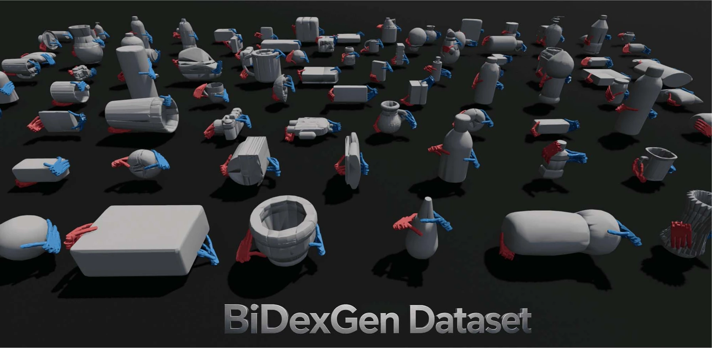
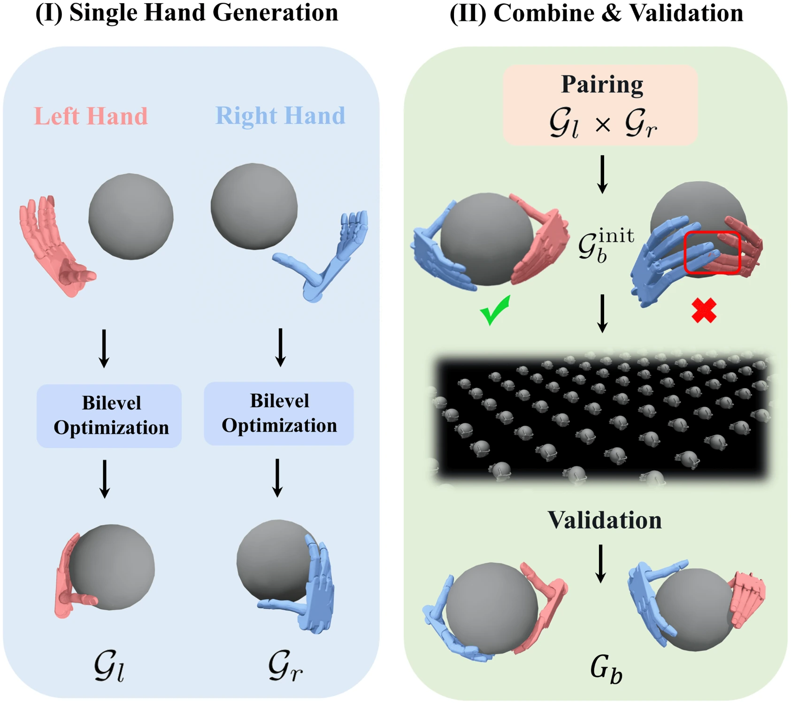
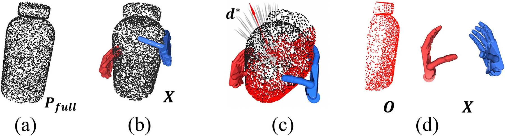
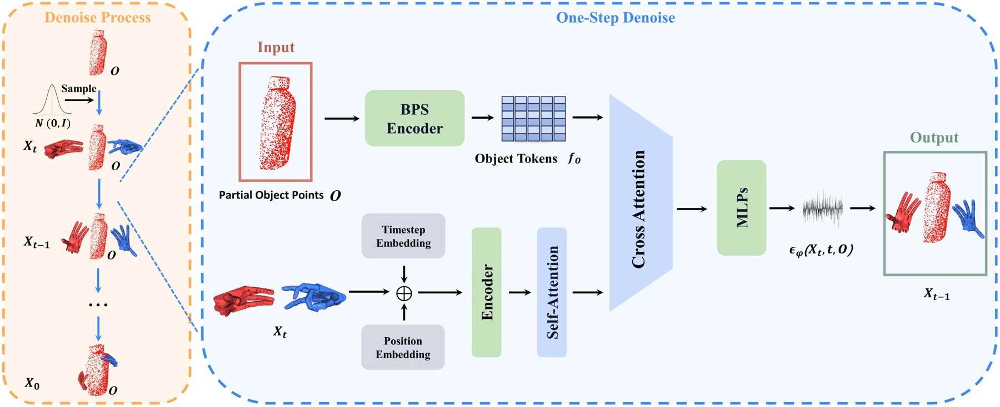
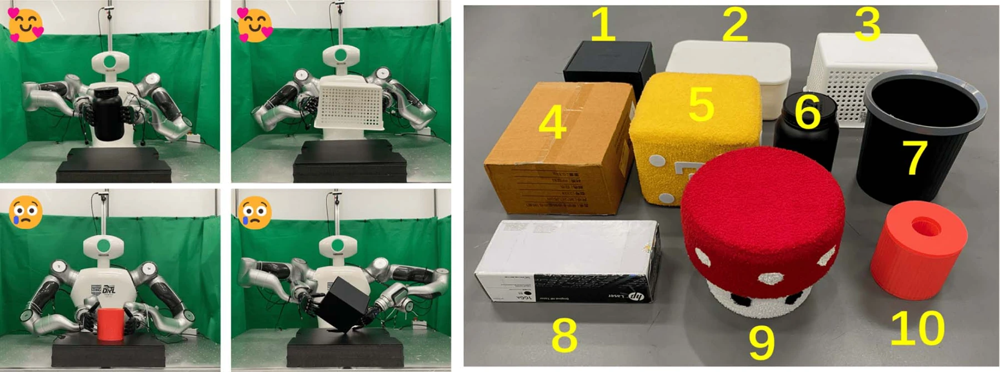

IEEE RA-L · 2026 / 第一作者论文
BiDexGen
从局部观测到 双手协同抓取
从局部点云生成双手抓取配置，并在双臂灵巧手平台验证。我的工作涵盖抓取数据合成、扩散模型训练与实机集成。

01
方法
切换查看三步方法，点击图片放大。


先优化单手，再组合双手
分别优化左右手抓取，组合候选后进行碰撞筛选与物理验证，得到可用于训练的双手抓取数据。


让观测与抓取接触对应
根据手掌方向与指尖接触区域选取虚拟视角，为训练构造与抓取标注匹配的局部点云。


从点云生成抓取配置
以局部点云为条件，通过扩散模型迭代去噪，同时生成两只手的腕部位姿与关节配置。
02
实验结果


71%真机抓取成功率
68.47%仿真抓取成功率
论文所报告的实验结果；真机验证包含双手抓取、抬升与稳定保持。
主要失败因素：机械臂不可达、观测缺失与双手支撑不均。